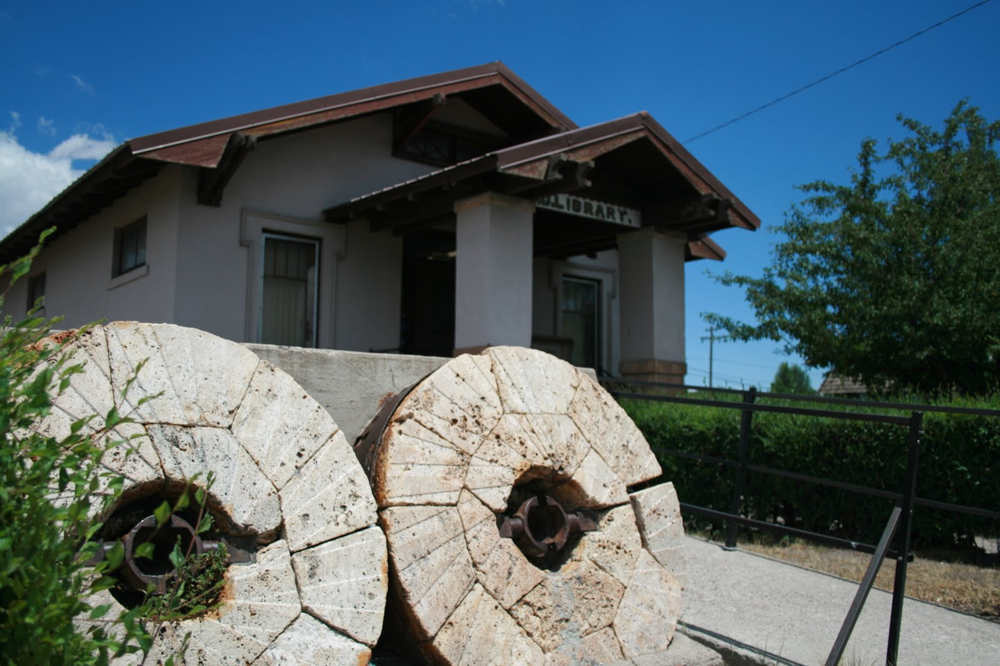
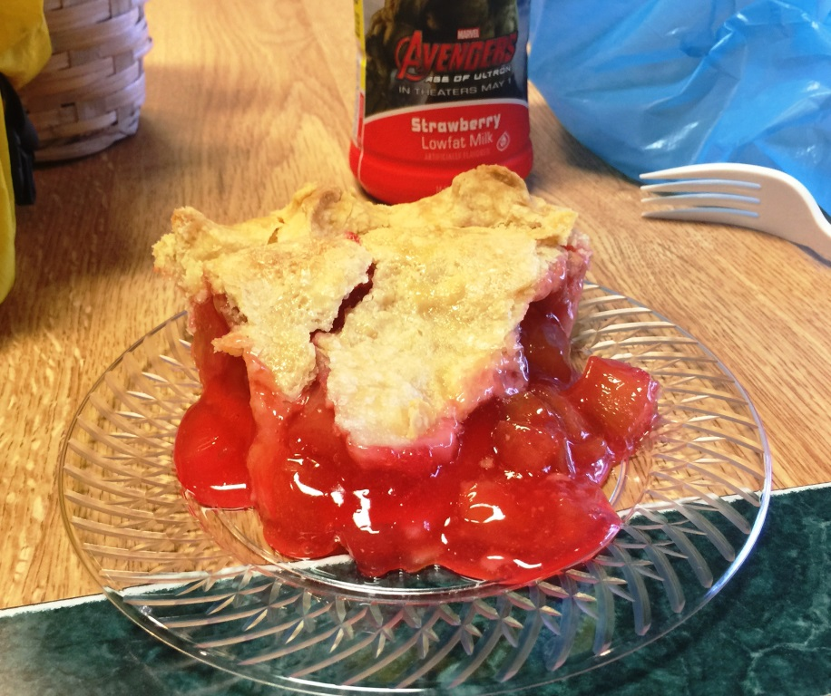

Del Norte Library
On Monday morning I woke up to rain and I was glad I wasn't riding. I went to the Amish bakery and bought a cinnamon bun and headed out to do my laundry. The library didn't open until the afternoon. I was able to use their computer and map out my alternative route. I was still planning on going over the pass if the weather allowed.

Del Norte public libraryDel Norte Windsor Hotel
The Windsor Hotel seemed out of place in Del Norte. It was a very nice building surrounded by many closed down stores. The manager explained that the building was over 130 years old and had been restored to it's previous glory in the late 90s. I would learn later that the restaurant had about the best food I had ever tasted. I had a delicious meal (Wild Boar) and fantastic desert to celebrate my day off.
 Windsor Hotel
Windsor Hotel

An afternoon snack of Strawberry Rubarb pie from The Columbine.I stopped in the Columbine after seeing their advertisement of cinnamon buns. They were delicious. The store appeared to be run by an Amish group and the woman at the counter said they would have some fried pies later in the afternoon. So aftter I spent my time at the library I went back but the fried pies were delayed and I ended up with the Strawberry Rubarb. I also bought an extra cinnamon bun for my ride on Tuesday.
July 6 - Del Norte, CO
See full screen map To go places and do things that I've never done before – that’s what living is all about.Text by Jim O'Brien . Photographs by Jim O'BrienTD on Flickr.